|
CandidateSearch 1.1.2
Proof-of-concept implementation of a search engine that uses sparse matrix multiplication to identify the best peptide candidates for a given mass spectrum.
|
|
CandidateSearch 1.1.2
Proof-of-concept implementation of a search engine that uses sparse matrix multiplication to identify the best peptide candidates for a given mass spectrum.
|
In order to assess the applicability of our candidate search, we first tested the algorithm on linear peptides. This showed very good results, especially with deconvoluted data. Moreover, we then also applied the algorithm to non-cleavable crosslink data and once more saw good results.
For testing against linear peptides, mass spectrometry RAW data of HeLa cells was retrieved from PRIDE via identifier PXD007750 and then exported to mgf format with Proteome Discoverer 3.1, either directly or with deisotoping and charge deconvolution. For comparison we searched the RAW data with MS Amanda (version 3.1.21.45, Engine version 3.0.21.45, see search settings in Table 1) and validated the results with Percolator (version 3.05.0) for 1% estimated false discovery rate (FDR). For every high-confidence peptide spectrum match (PSM) we then checked if the associated peptide was within the top N peptide candidates returned by the algorithm.
The used database was uniprotkb_proteome_UP000005640_AND_revi_2024_03_22.fasta (Human SwissProt).
| Parameter | Value |
|---|---|
| MS1 Tolerance | 5 ppm |
| MS2 Tolerance | 10 ppm |
| Max. Missed Cleavages | 2 |
| Minimum Peptide Length | 5 |
| Maximum Peptide Length | 30 |
| Fixed Modification | Carbamidomethylation(C) |
| Variable Modification | Oxidation(M) |
Table 1: Search settings used for MS Amanda to identify PSMs.
For testing against cross-linked peptides, mass spectrometry RAW data was retrieved from PRIDE via identifier PXD014337 and exported the same way. For comparison we used available results from the cross-linking search engine MaxLynx which were also retrieved from PRIDE via identifier PXD027159. Analogously, we checked for every high-confidence (1% FDR) crosslink spectrum match (CSM) if one of the associated peptides was within the top N peptide candidates returned by the algorithm.
The used database was cas9_uniprotkb_proteome_UP000005640_AND_revi_2024_03_22.fasta (Human SwissProt + S. pyogenes Cas9).
Before analysing the complete datasets we studied the influence of the parameters NORMALIZE and USE_GAUSSIAN. The following plots show the results using NORMALIZE = false and USE_GAUSSIAN = true for replicate 1 using eiter RAW or deconvoluted spectra.
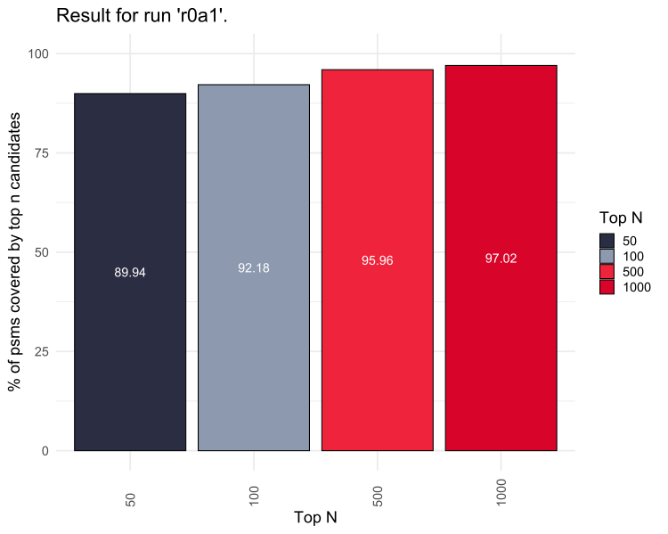
Figure 1: Results for PXD007750 replicate 1 (RAW) using NORMALIZE = false and USE_GAUSSIAN = true.
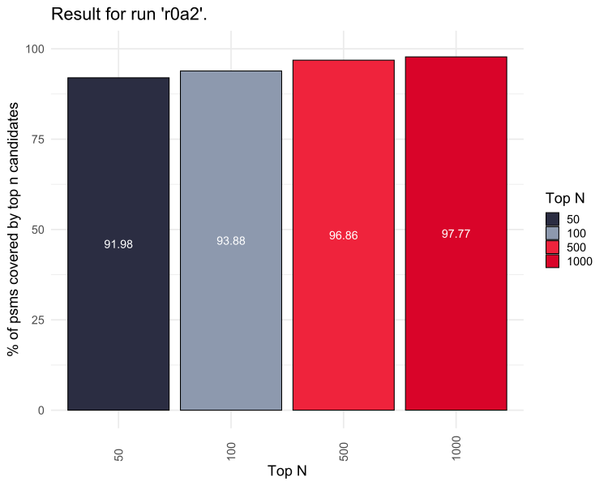
Figure 2: Results for PXD007750 replicate 1 (deconvoluted) using NORMALIZE = false and USE_GAUSSIAN = true.
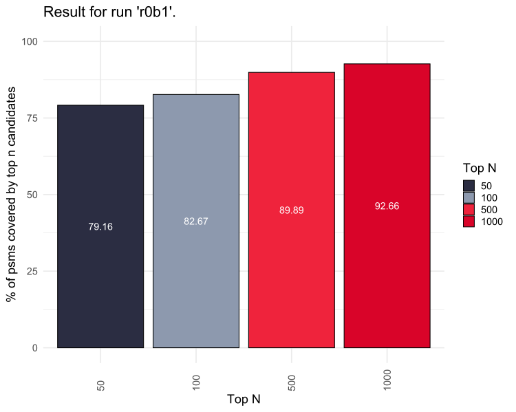
Figure 3: Results for PXD007750 replicate 1 (RAW) using NORMALIZE = false and USE_GAUSSIAN = false.
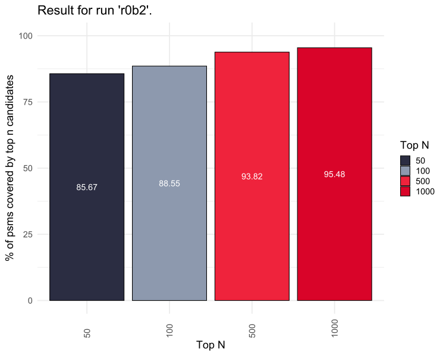
Figure 4: Results for PXD007750 replicate 1 (deconvoluted) using NORMALIZE = false and USE_GAUSSIAN = false.
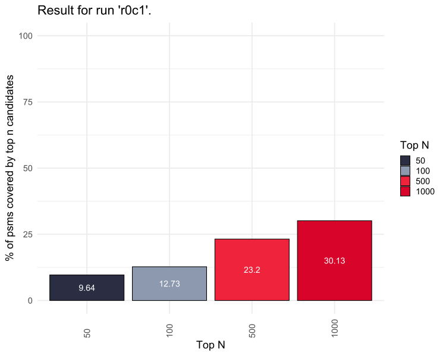
Figure 5: Results for PXD007750 replicate 1 (RAW) using NORMALIZE = true and USE_GAUSSIAN = false.
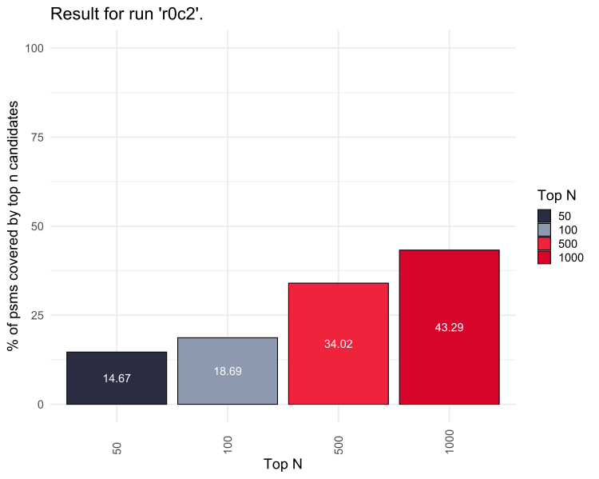
Figure 6: Results for PXD007750 replicate 1 (deconvoluted) using NORMALIZE = true and USE_GAUSSIAN = false.
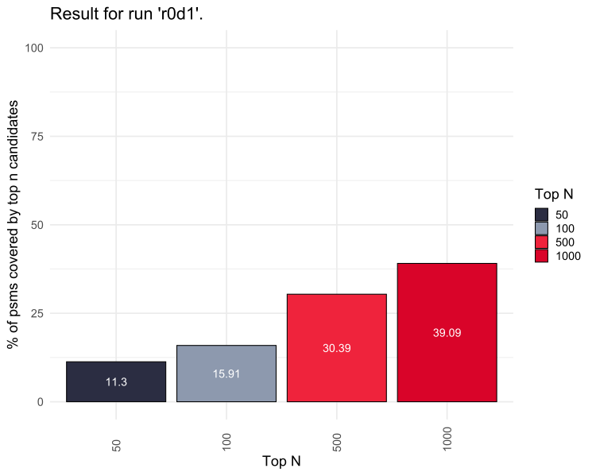
Figure 7: Results for PXD007750 replicate 1 (RAW) using NORMALIZE = true and USE_GAUSSIAN = true.
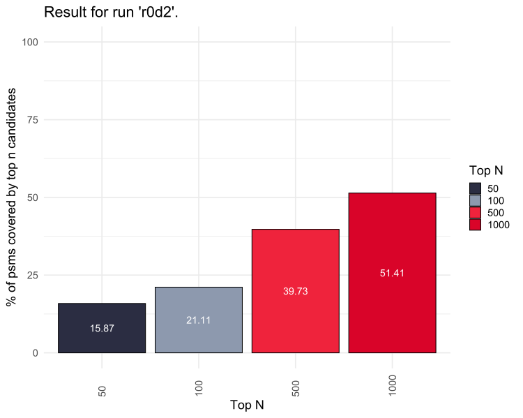
Figure 8: Results for PXD007750 replicate 1 (deconvoluted) using NORMALIZE = true and USE_GAUSSIAN = true.
It is pretty clear from r0a1 to r0d2 that parameter combination NORMALIZE = true and USE_GAUSSIAN = true with deconvoluted spectra yields the best results. This is what we therefore used for final analysis of all three replicates of the dataset.
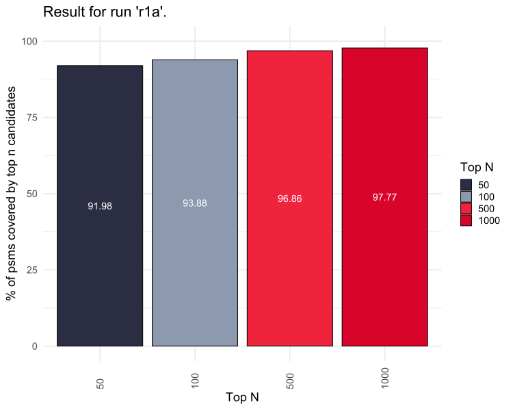
Figure 9: Results for PXD007750 replicate 1 (deconvoluted) using NORMALIZE = false and USE_GAUSSIAN = true.
Figure 10: Results for PXD007750 replicate 2 (deconvoluted) using NORMALIZE = false and USE_GAUSSIAN = true.
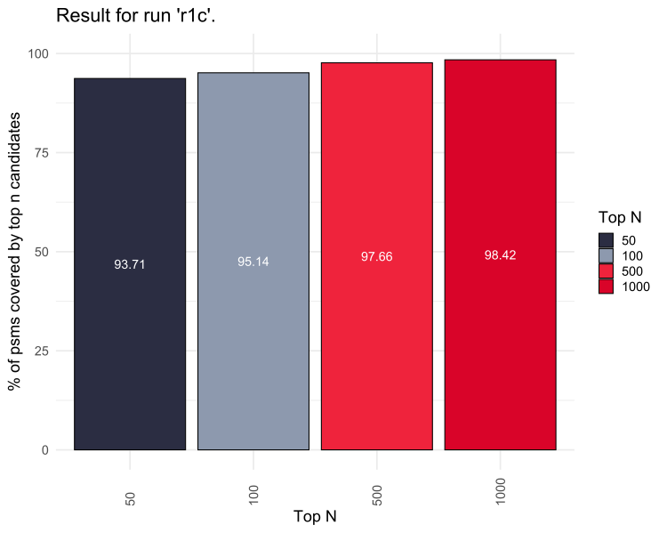
Figure 11: Results for PXD007750 replicate 3 (deconvoluted) using NORMALIZE = false and USE_GAUSSIAN = true.
For the cross-linking data we used the same settings as for linear peptides: NORMALIZE = false and USE_GAUSSIAN = true using deconvoluted spectra.
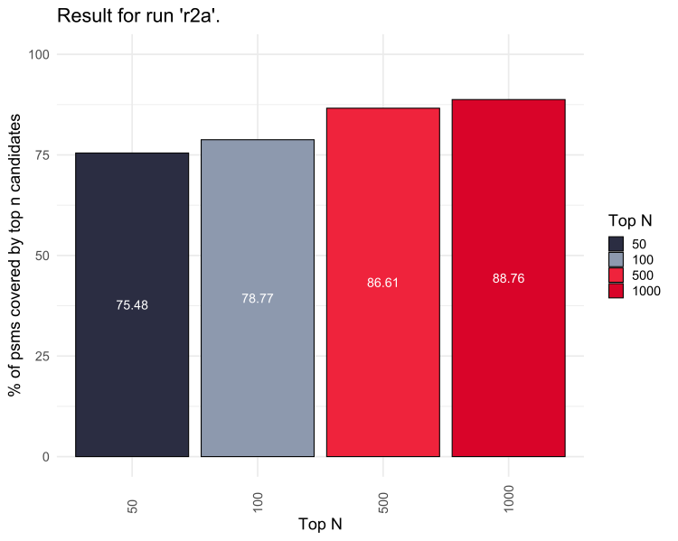
Figure 12: Results for PXD014337 replicate 1 (deconvoluted) using NORMALIZE = false and USE_GAUSSIAN = true.
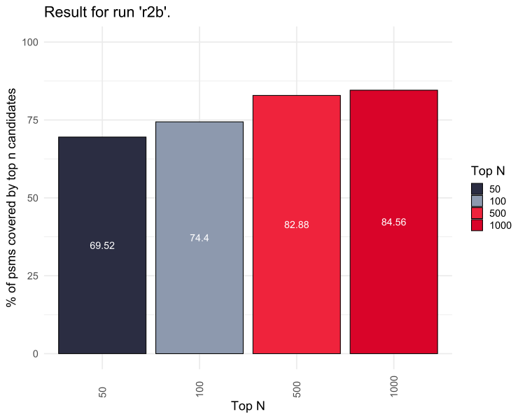
Figure 13: Results for PXD014337 replicate 2 (deconvoluted) using NORMALIZE = false and USE_GAUSSIAN = true.
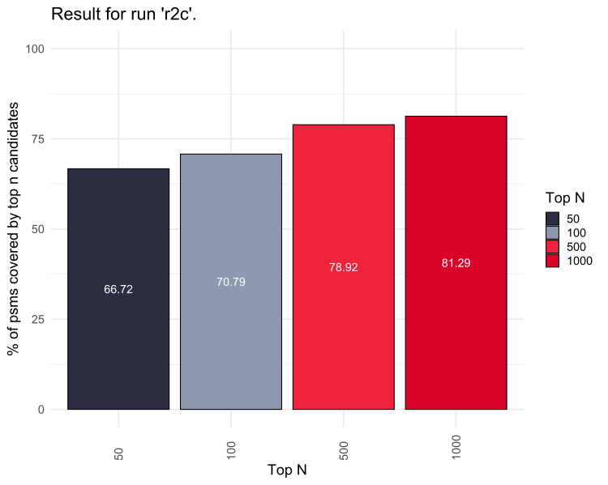
Figure 14: Results for PXD014337 replicate 3 (deconvoluted) using NORMALIZE = false and USE_GAUSSIAN = true.
The full list of files for these tests can be accessed via http://u.pc.cd/z75otalK.
We could show that both for linear peptides and cross-linked peptides our algorithm is capable of finding the correct peptide candidate for identification. Interestingly, normalization does not improve results, quite contrary they get a lot worse. The best results were achieved using deconvoluted spectra with parameter settings NORMALIZE = false and USE_GAUSSIAN = true.